Coulaines 2009

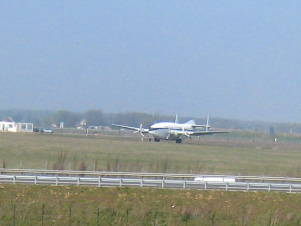
Première rencontre outdoor 2009 en France. Départ donc pour Coulaines, en grande banlieue du Mans. Je passe près d'Evreux et le noeud d'autoroute me permet d'admirer le Bréguet Deux-Ponts (1953-1972), le premier jumbo-hélice, le seul avion de transport au monde qui n'ait eu aucun crash, ni fait aucune victime !

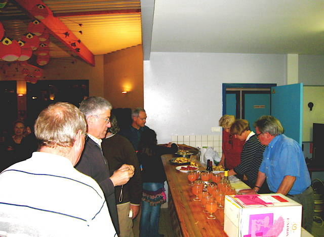
Vendredi, après une petite participation à l'accrochage du dragon au plafond, petit pot, puis petit dîner pour les volontaires...

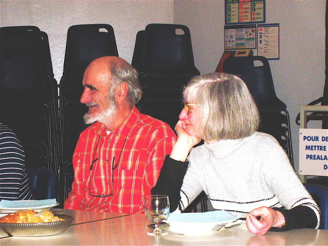
Début de la saison, je vais vous rappeler des visages, comme ici Gaby et Josette.

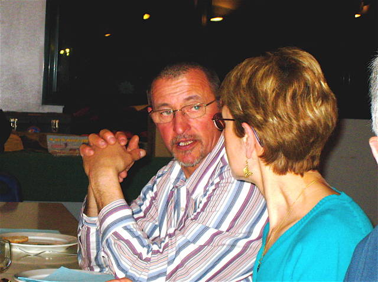
Et Jean-Marc, qui écoute (pour une fois...), la charmante épouse de Joël Goupil...

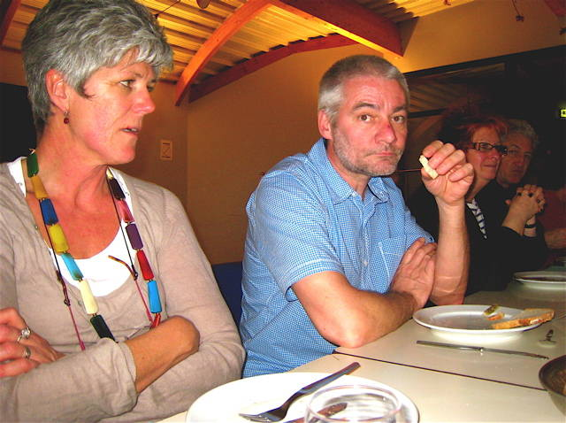
Et puis Niekol (notez bien l'orthographe, je ne le répèterai pas) et Mark, venus d'Anvers avec leurs éoliennes rapides !

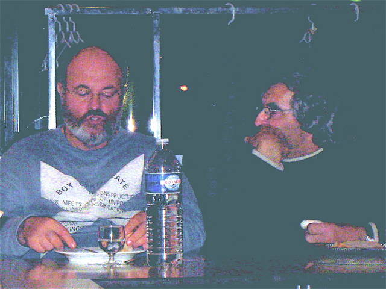
Bruno Claes, le grand spécialiste du Tom-Tom et des cerfs-volants à étoile verte et blanche discute avec Jean-Claude, le GO.

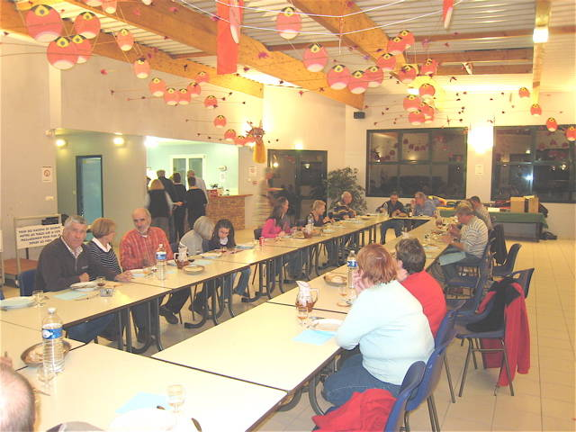
Finalement, on se retrouve assez nombreux autour de la table, sous l'interminable dragon de Jean-Claude...

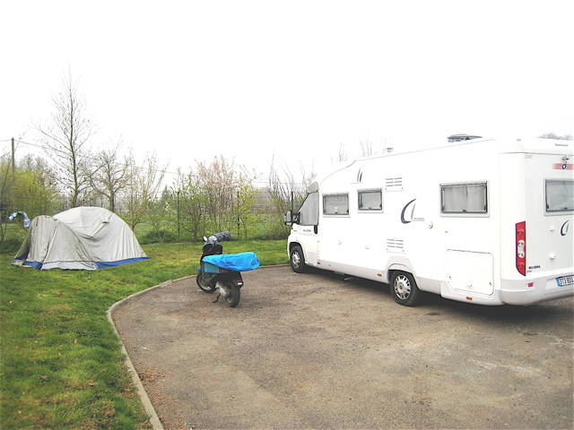
Michel est arrivé de Paris sur son MBK, limité à 45 km/h. Il roule à 50, mais ne le répétez pas ! Il ne reviendra pas à Paris de suite, mais anticipera vers Châtelaillon...

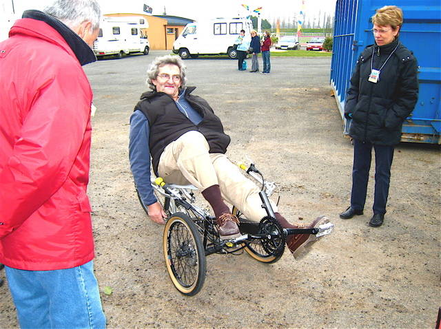
Jean-Claude Veillerobe (notez là-aussi l'orthographe sans i après le V) vient nous faire une démo du "vélo couché" sur lequel il a travaillé tout l'hiver.

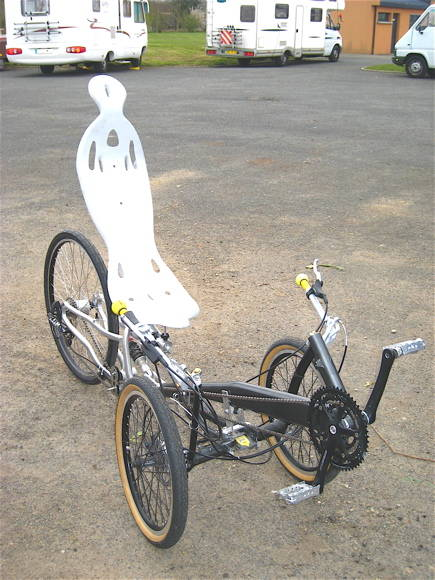
C'est un vélo à 3 roues, dont 2 à l'avant, commandées par câble en levant ou baissant les poignées latérales.

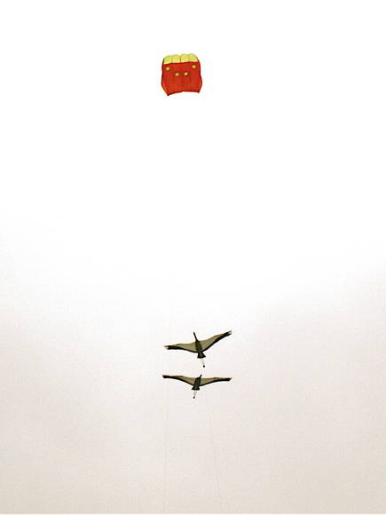
Le ciel est plutôt gris et même pire, mais il y a encore un peu de vent. Je peux monter mes deux grues pour les mettre au point. L'une a plus d'angle que l'autre, c'est exprès !

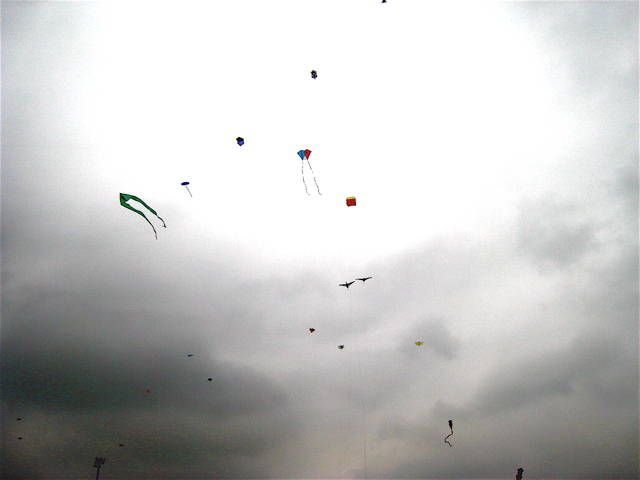
Du gris clair au gris foncé, les cerfs-volants se lancent quand même généreusement. Tout là-haut est le delta de Michel.

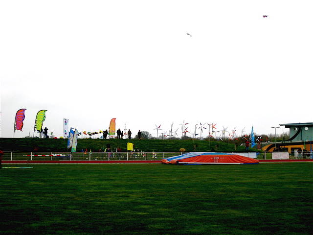
Sur le merlon qui sépare les terrains, les Jardins du V..t se sont installés. Les éoliennes de Mark tournent bien !

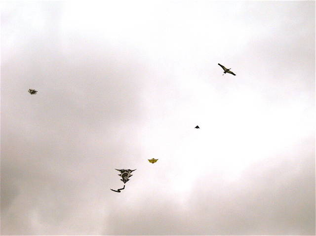
Vent de Folie est arrivé de Vierzon avec toute une panoplie cervolistique. Tant qu'il y a du vent et qu'il ne pleut pas, profitons-en ! Sylvien Venet est aussi là avec... un Jessica, évidemment.

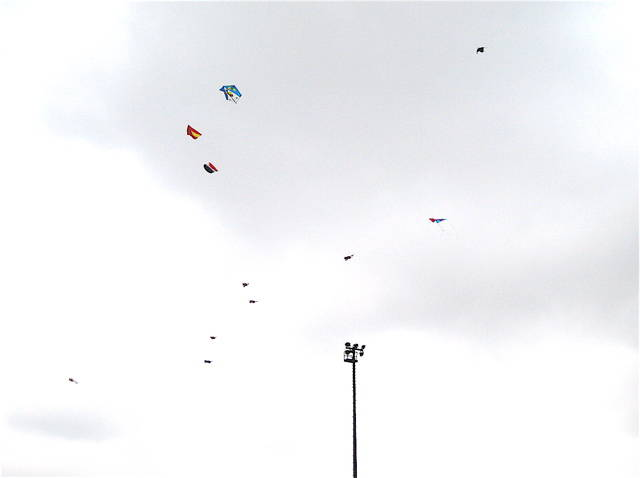
Le ciel s'éclaircit un peu, mais ce n'est pas encore ça. Nous sommes déçus, après une semaine de grand beau temps !

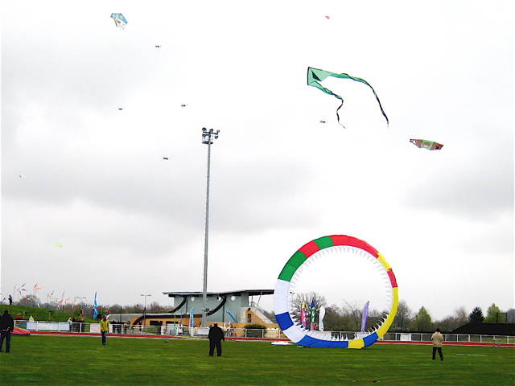
Et pas que des cerfs-volants, un grand bol se gonfle aussi...

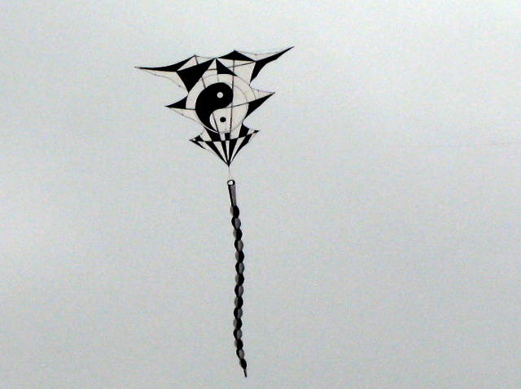
Jacques a produit comme d'habitude un "ANA" (comme Anaelle). Celui-ci se nomme Anaforme...

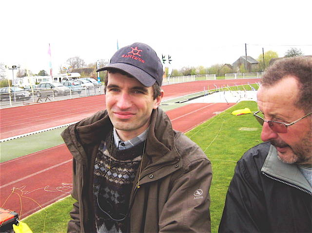
Christophe se lance dans la pub pour Kapita/09. Si vous ne le savez pas, KAP= Kite Aerial Photography. I= International, et TA pour TAhiti, où doit avoir lieu la réunion mondiale 2009 de la discipline, il y a là-bas un fan qui dispose de quelques facilités...

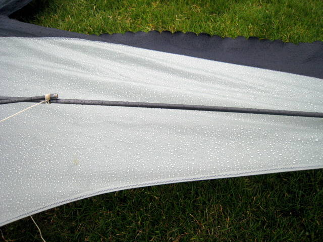
Catastrophe, il commence à crachiner ! Ce n'est pas que nous ayons peur de nous mouiller, mais "petite pluie abat grand vent", et sur un vent déjà petit, je ne vous dis pas le résultat !

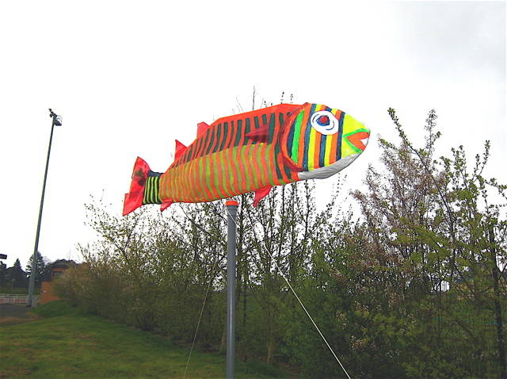
Fernando a monté sur pied un gros poisson très rigide et coloré...

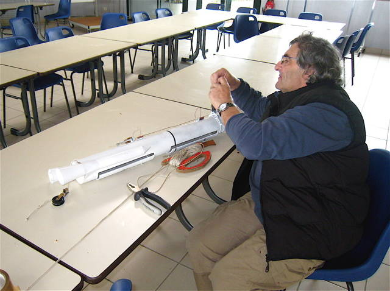
On rentre à l'abri. Jean-Claude peaufine sa navette en forme de... Navette ! Elle est dotée de petites soutes qui s'ouvrent en butée haute pour larguer non des satellites, mais... des bonbons et autres.

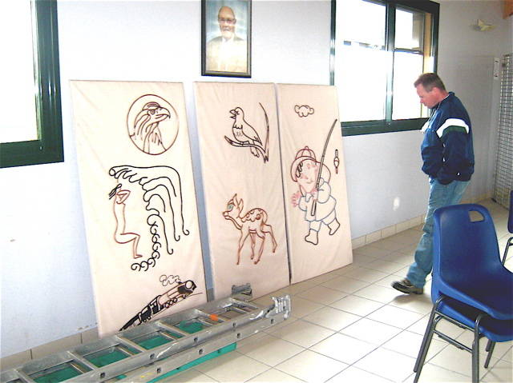
Il a aussi "peint" des tableaux en fil de cuivre gainé (pour la couleur) et tordu ! Il n'arrête pas, cet homme !

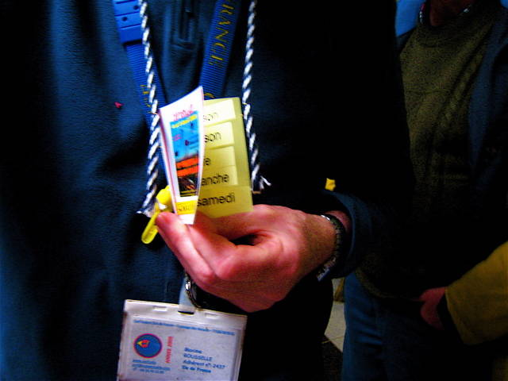
Il a encore réalisé des badges complexes : D'abord, ils ont 2 points d'attache pour toujours rester à l'endroit, ce qui est rare. Ensuite, l'attache de droite se replie et le badge s'ouvre, révélant... les tickets de restauration !

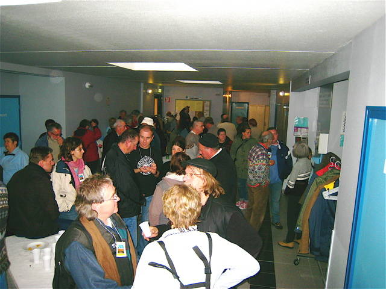
Le vent ayant été très faiblard cet après-midi, on accueille volontiers le pot traditionnel !

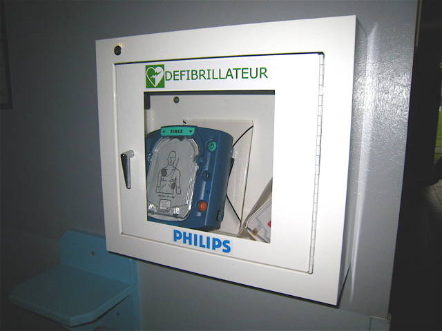
Tout est prévu, boissons, cahuètes, chouquettes délicieuses, et même... le défibrillateur.

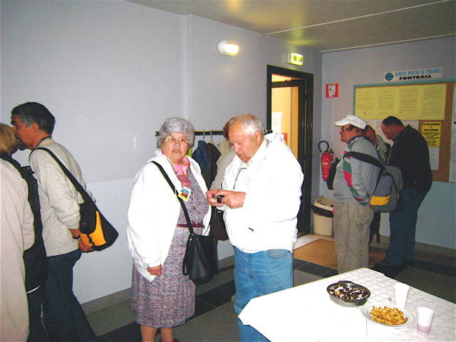
Je continue le tour de table. Madeleine et Michel Renouis, les infatigables de Charente-Poitou, n'ont pas manqué Coulaines...

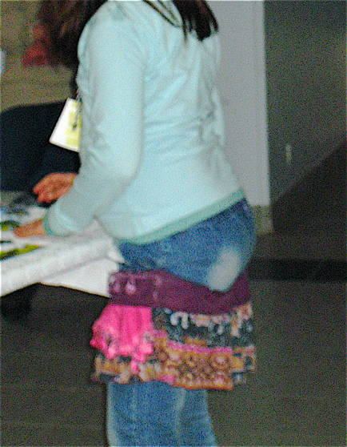
Je connaissais les jupes courtes, ou bas sur les reins, mais la mode des jeunes réserve toujours des surprises !

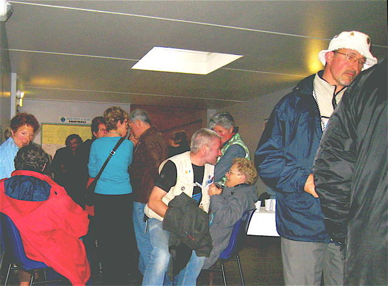
Bernadette se laisse aller à attirer Mark de force sur ses genoux !

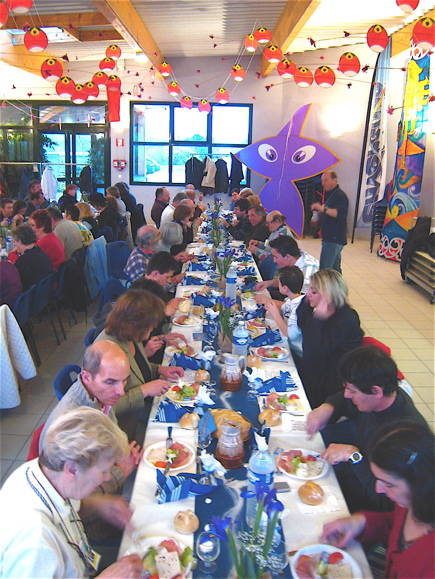
Enfin, les tables sont ouvertes et révélées, avec une décoration et des chemins de table très complexes !

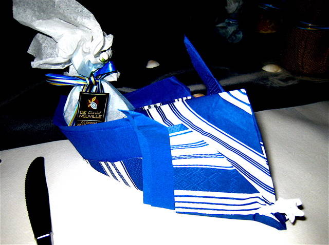
Sur les tables, des serviettes pliées artistiquement et surchargées d'étoiles de mer, d'hippocampes, et porteuse d'un sac d'oeufs de Pâques... Quel effort !

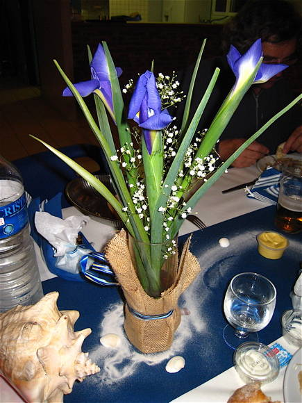
Il y a même des fleurs et des coquillages sur cette mer centrale qui court d'un bout à l'autre...

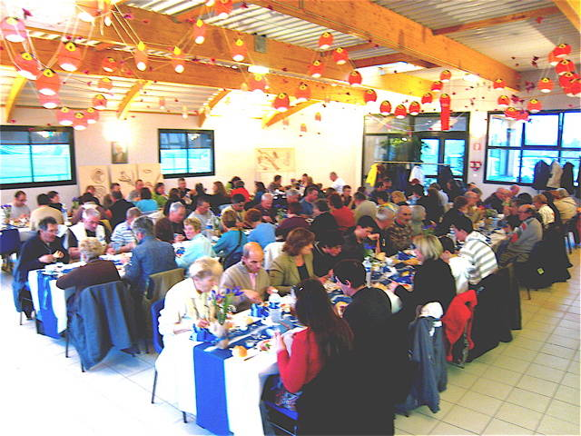
Finalement, l'ensemble fait une très belle salle où l'on a plaisir à être ensemble...

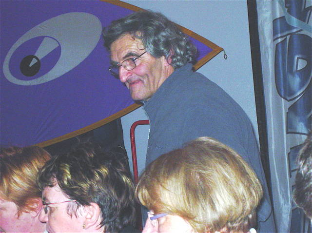
Le maître de maison fait la tournée des popotes pour parler à chacun !

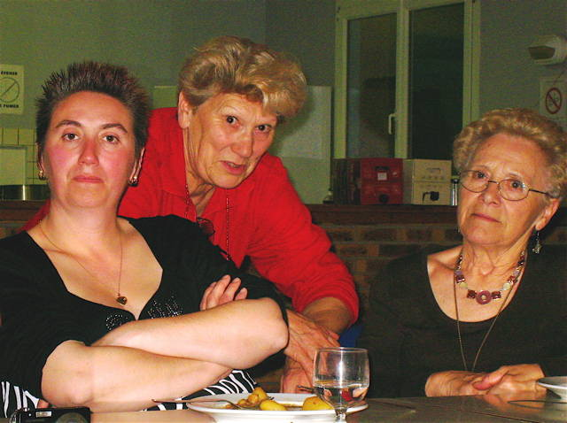
Les dames ont enfin un moment un peu calme pour discuter. C'est Josette, au centre, qui manigance toutes ces richesses !

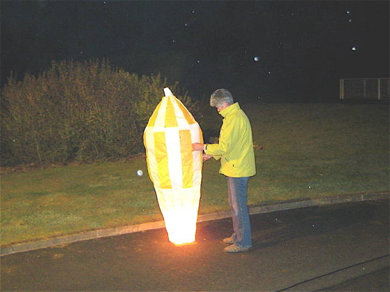
Après le dîner, toujours pas de vent. C'est le moment de lancer des montgolfières ! Celle de Niekol n'est pas sphérique, un peu lourde de par sa déco, et elle a une fuite... alors elle se maintient juste à portance nulle...

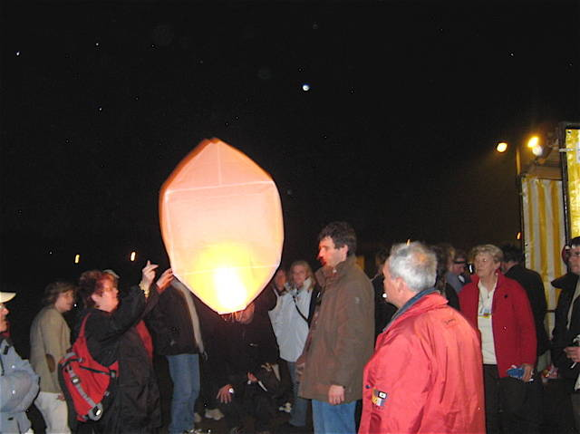
Celui-ci, plus rebondi, va sûrement mieux voler...

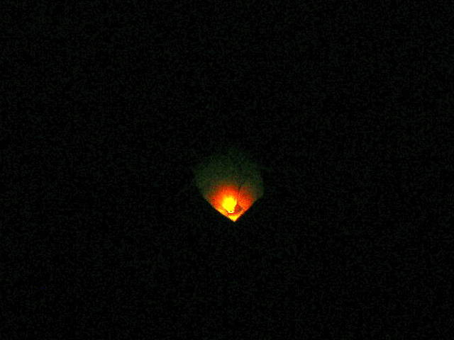
Et voilà, il est parti. Il en volera bien 4 ou 5, dont 1 ou 2 brûleront malheureusement à quelques mètres, chahutés par les turbulences des basses couches. D'autres seront vus très longtemps, avec ce vent faible, on ne les perd pas à l'horizon !

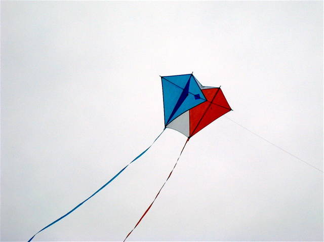
Dimanche matin, très petit vent ! On voit quelques cerfs-volants tirés par leur propriétaire, mais peu restent vraiment en l'air. Ce double Eddy est assez particulier !

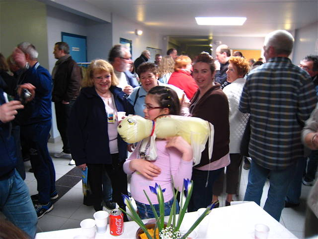
Encore un pot à 11h30, vu le vent, on ne va pas pleurer ! Discours du maire, etc... Emmanuel a amené son Chat-Farin... qui a serré la main dudit ministre à Berck !

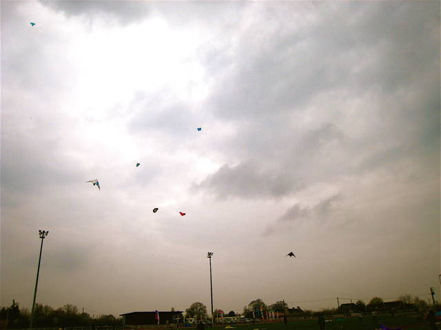
Dimanche après-midi, les cervolistes s'efforceront encore de voler un peu, mais souvent à basse altitude avec beaucoup d'efforts. J'ai sorti ma raie Manta, tout là-haut à gauche !

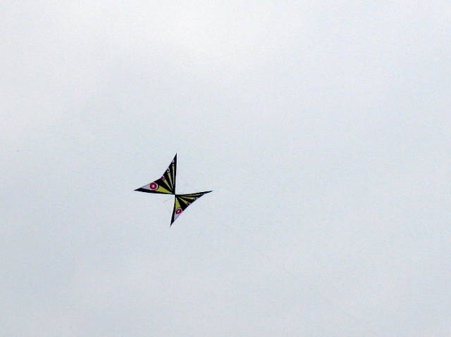
Plusieurs Papillons (conception Ferment) ont bien tiré leur épingle du jeu dans ces conditions limites : en les manipulant comme des combattants, le cervoliste arrive à les garder en l'air pratiquement sans vent, et en évolutions très amusantes !

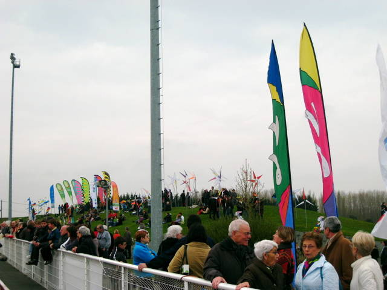
Malgré des conditions météo pas très agréables, le public était venu, peut-être pas aussi nombreux que souhaité, mais là quand même. Entre les jardins du vent, les jeux de billes de Joël, les boutiques et les cerfs-volants qui volaient malgré tout, il pouvait passer cependant un bon après-midi.

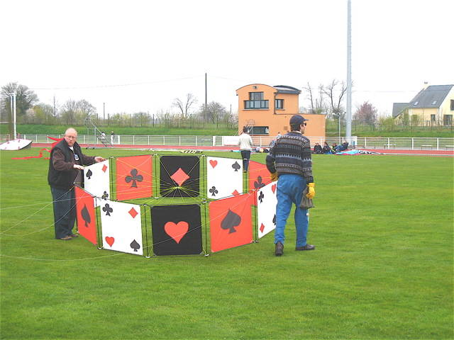
Philippe a sorti son jeu de cartes, son "circo-rigide", comme dit André Cassagnes (ce n'est pas une roue, contrairement aux commentaires, la position est perpendiculaire à la leur)... Mais il a seulement pu faire quelques traversées de terrain en montant à quelques mètres.

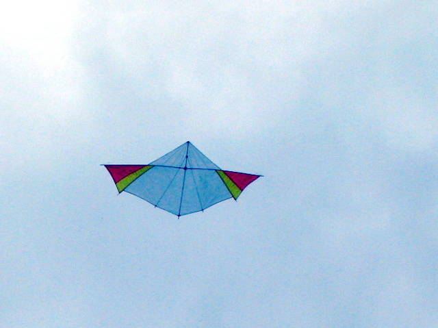
Sylvien, lui, a pu faire voler longtemps son Jessica "augmenté", aux ailes hypertrophiées et plus porteuses ! La structure est un peu différente, mais l'ensemble reste léger et stable...

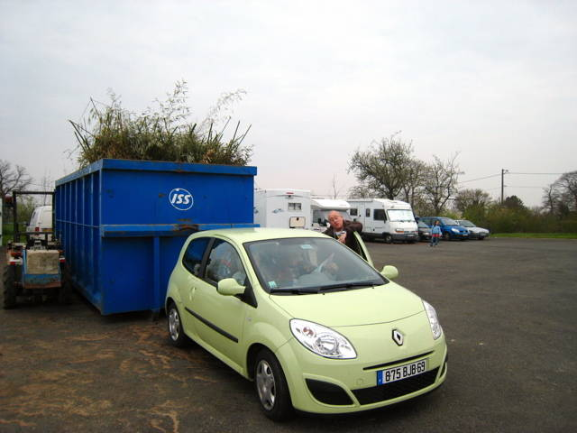
Mais beaucoup de cervolistes qui avaient de la route à faire ont plié bagage assez tôt, comme Gaby et Josette qui étaient venus cette fois en Twingo toute neuve, laissant le camping-car à la maison !

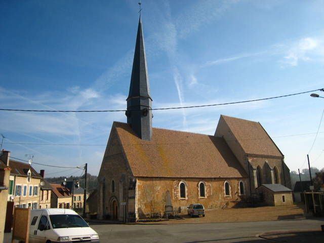
Je dors au fond du stade et lundi matin, je reprends tranquillement la route. Arrêt devant une charmante petite église romane au sud de Nogent-Le-Rotrou. Des toits très pentus, un clocher élancé, des assises solides, un bel équilibre...

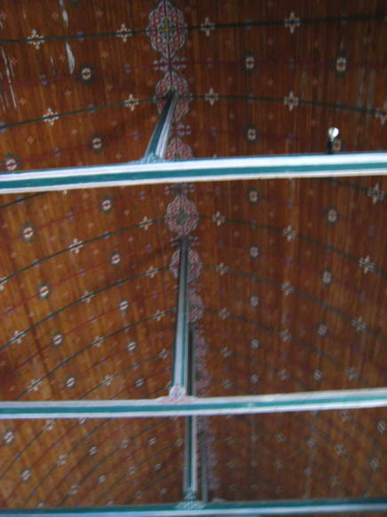
C'est ouvert, à l'intérieur une voute en bois couvre la nef. Elle est décorée de motifs ornementaux peints du plus bel effet...

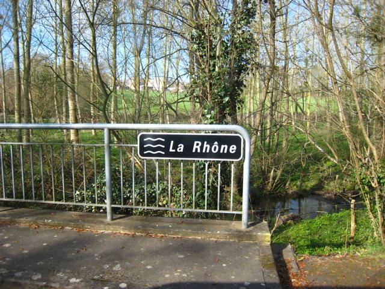
Pour finir, je traverse le Rhone pour rentrer sur Paris. Ca ne vous choque pas ?
Coulaines 2009 : Toujours égale à elle-même, l'équipe de Coulaines, qui offre toujours un peu plus que ce que l'on attend. Dommage pour la météo, mais c'est secondaire, on s'est retrouvé les uns les autres, bien amusé, et on est reparti pour une année de rencontres avec la joie et l'amitié au coeur !